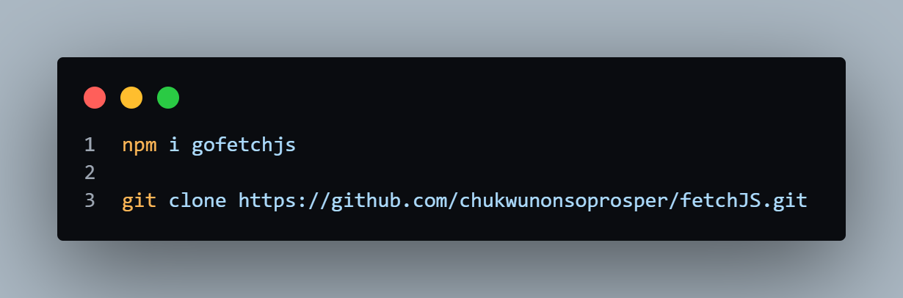
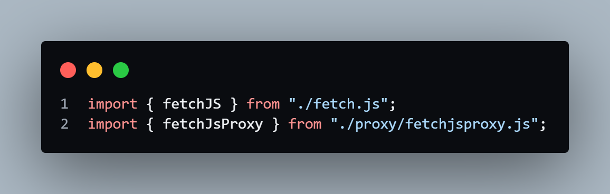
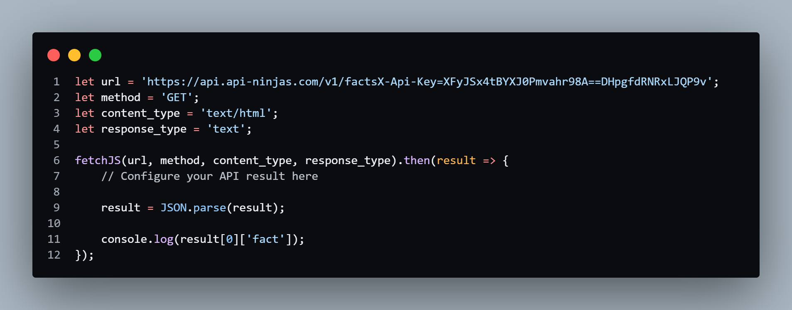

fetchJS🦅
fetchJS is a lightweight JavaScript library designed to simplify the process of making HTTP requests in client-side applications. By leveraging the Fetch API, fetchJS provides developers with a clean and intuitive interface for fetching resources from the internet without the complexity of dealing with XMLHttpRequest or fetch API configurations.
FETCH
API
LIGHTWEIGHT
CORS
PROXY
Features:
Developers have the flexibility to customize various aspects of their HTTP
requests, including the URL, method, content
type, and response type, to suit their specific requirements.
Flexible Configuration
With fetchJS, developers can make HTTP requests effortlessly using a simple and
intuitive API. The library
handles
common tasks such as constructing fetch URLs, specifying HTTP methods...
Easy-to-Use Interface
fetchJS seamlessly handles Cross-Origin Resource Sharing (CORS) issues, enabling
developers to fetch resources from
external domains without encountering CORS restrictions.
CORS Support
fetchJS includes robust error handling mechanisms to gracefully handle errors and
provide informative error messages,
ensuring smooth error recovery and debugging.
Error Handling
Usage
Setup instructions

Install from npm or clone the GitHub repo to get started with fetchJS and its proxy server.

Discover how to import the fetchJS library and proxy server to streamline your API requests.

Customize the variables in workspace.js to your desired values and query the response data efficiently.

Utilize the custom fetchAPI to make a POST request, incorporating the proxy into the API URL for enhanced functionality.
FetchJS includes a built-in proxy server for easy integration into your project. To get started, simply clone the GitHub
repository and import the module into your working directory. If you prefer to use your own script file, ensure you
import the modules correctly to avoid any issues.
For GET requests, the FetchJS response is already available for you to parse. If the response doesn't meet your expectations, you can utilize JSON.stringify() and JSON.parse() for better manipulation.
For POST requests, import the proxy server module, append your api_url to the proxy, and use the custom fetch syntax to call the response from the server. This method helps you avoid CORS issues, providing a smooth and efficient way to handle your API requests.
For GET requests, the FetchJS response is already available for you to parse. If the response doesn't meet your expectations, you can utilize JSON.stringify() and JSON.parse() for better manipulation.
For POST requests, import the proxy server module, append your api_url to the proxy, and use the custom fetch syntax to call the response from the server. This method helps you avoid CORS issues, providing a smooth and efficient way to handle your API requests.
Why fetchJS
fetchJS simplifies the process of making HTTP requests, saving developers time and
effort when implementing
client-server communication in their applications.
Saves Time and Effort
With its clean and concise API, fetchJS improves code readability and
maintainability, making it easier for developers
to understand and collaborate on codebases.
Enhances Code Readability
fetchJS is compatible with modern web browsers and provides consistent behavior
across different browser environments,
ensuring a smooth user experience for all users.
Cross-Browser Compatibility